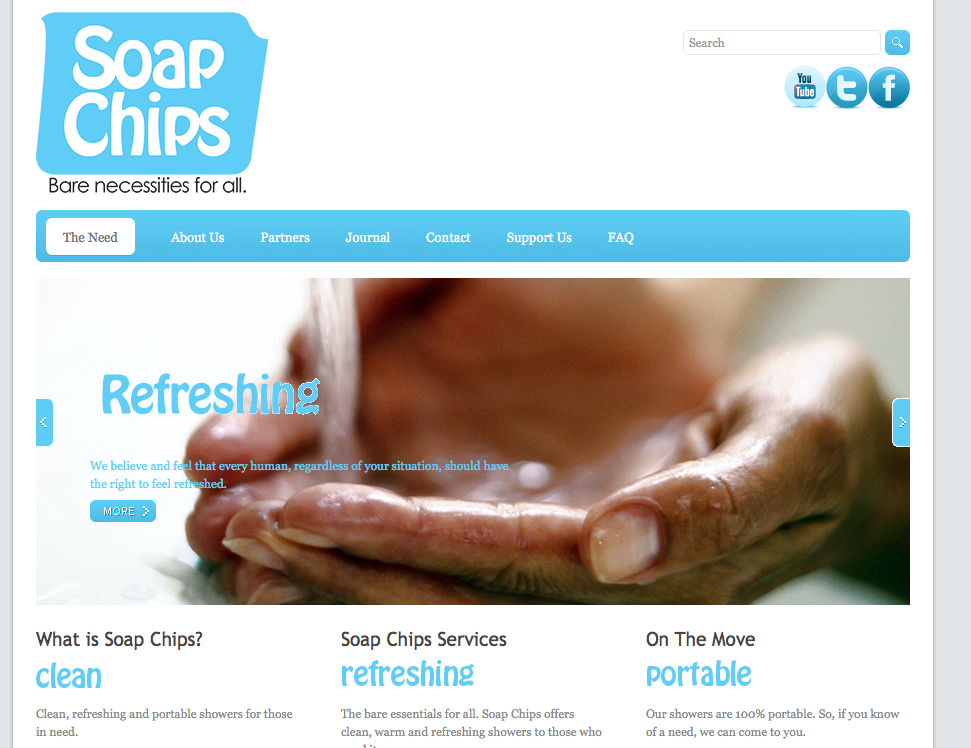
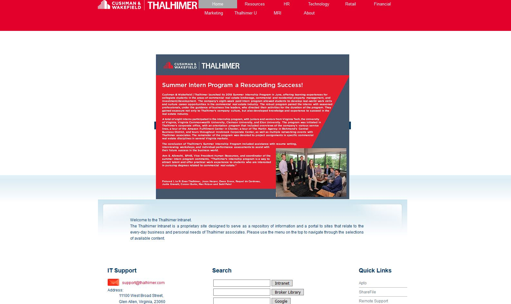
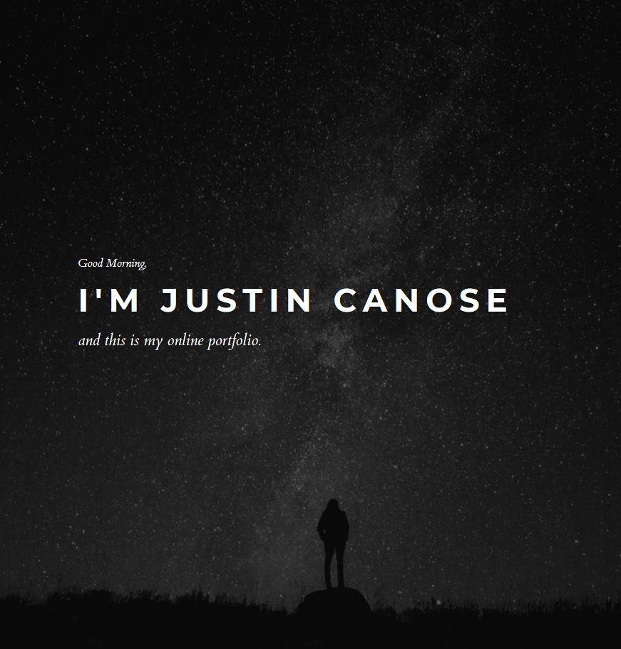

Microsoft 365 & Cloud
SharePoint Online, Teams, OneDrive, Entra ID, secure collaboration, and Microsoft Purview.
Connecting enterprise systems, data, and people through thoughtful administration, scalable automation, and practical technology solutions.
IT professional with a foundation in network and systems engineering and a current focus on Microsoft 365, enterprise application administration, automation, and ERP implementation. I build practical solutions that simplify processes, support business teams, and make technology easier to use.
From bulk SharePoint provisioning and workflow orchestration to data extraction for ERP modernization, I bring hands-on technical execution to complex business needs.
A combination of enterprise administration, workflow automation, systems integration, and end-user enablement.
SharePoint Online, Teams, OneDrive, Entra ID, secure collaboration, and Microsoft Purview.
PowerShell bulk administration, Azure Logic Apps, and Power Automate workflow solutions.
MRI database queries, large-scale data extraction, and support for the Yardi implementation.
Practical use of AI-assisted tools for research, scripting, troubleshooting, and documentation.
MRI Software, Yardi, RealPage, Nexus, Adobe Creative Cloud licensing, and BrightSign/ Visix.
Microsoft Copilot, internal technology guidance, and stakeholder collaboration.
Independent graphic design, website development, and creative projects.
Developed strategic plans and objectives for hospital networks and supported reliable IT operations.
Database administration and technical support.
A.A.S. Computer Science · 2003
B.S. Graphic Design · 2009
Selected projects preserved from the original portfolio.

Website
Logo design

Internal web project

Creative website
Explore additional creative work at canossagraphics.art.
Based in Richmond, Virginia. Interested in enterprise applications, Microsoft cloud administration, and automation.